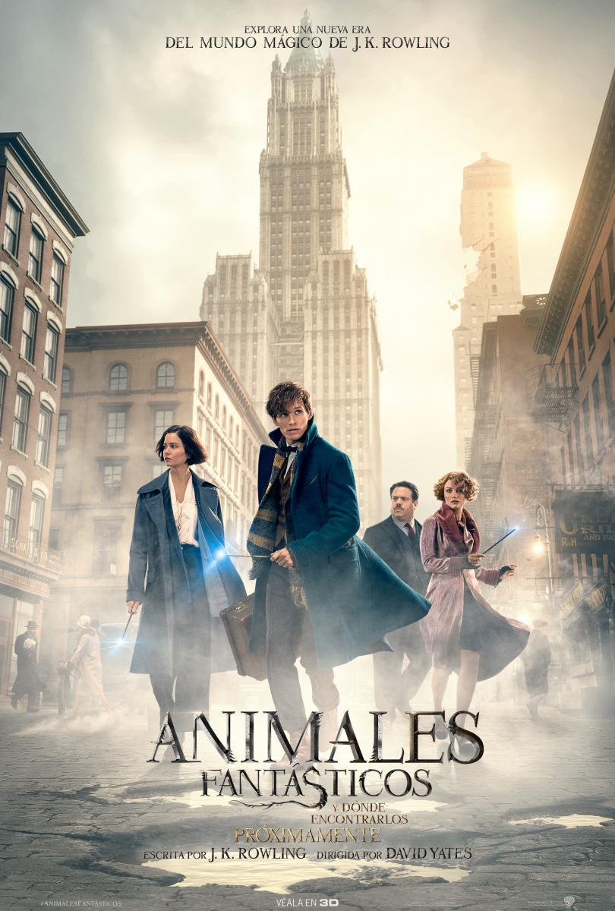

En 1926, el mago experto en zoologia Newt Scamander hace una breve parada en Nueva York mientras viaja catalogando y capturando criaturas mágicas por el mundo. Jacob, un humano corriente, provoca por error que las criaturas escapen y se oculten por la ciudad. Scamander tendrá que atraparlas de nuevo, antes de que causen problemas.
Animales fantásticos es una serie de películas basadas en Animales fantásticos y dónde encontrarlos, uno de los libros de compañía de la serie Harry Potter escrita por J. K. Rowling. Rowling hizo su debut como guionista con la primera de ellas, de título homónimo. David Heyman, productor de las películas de Harry Potter, regresó como productor de esta pentalogía. La primera película comenzó en Nueva York, alrededor de la década de 1920, setenta años antes de la serie Harry Potter, y cuenta con Newton Scamander como personaje principal. El resto de las películas se encuentran en otras ciudades. Animales fantásticos y dónde encontrarlos nos dice que Scamander había estado viajando por el mundo realizando investigaciones sobre las criaturas mágicas desde 1918, que culminó con la publicación de su obra maestra en 1927.
En la saga los personajes principales son:
Si quieres saber mas acerca de las peliculas puedes ver el siguiente resumen:
O puedes ver los adelantos para llamar tú atención!!